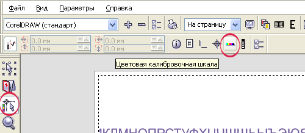
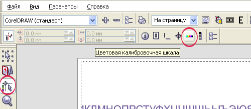

а че все по-англицки? Собираешься на мировой рынок ? :D
divingdog / 11.10.2010, 18:54
а че все по-англицки?
Не ипользую в софте русских локализаций и вам не советую :D
Sancho / 11.10.2010, 18:59
Описание где?
divingdog / 11.10.2010, 20:04
Описание где?
Звиняйте к вечеру исправлюсь.
Добавлено (11.10.2010, 17:04) --------------------------------------------- Не каждый рип позволяет добавлять тестовые цветовые полосы CMYK при печати. CMYKcheckbar предназначен для решения этой проблемы. Возможно задавать ширину полос,отступ от макета,расстояние между полосками и ориентацию относительно макета.
shark / 11.10.2010, 20:44
Мне приходилось работать печатником на нескольких моделях принтеров, ш/ф и интерьерных, поэтому, на мой взгляд, цветные полосы CMYK на печати делает непосредственно сама программа управления печатью, а не RIP. Там же задается отступ, ширина и положение полос.
divingdog / 11.10.2010, 20:53
не все программы управления печатью делают это. Например Wasatch softrip не делает.
Solowejka / 11.10.2010, 23:40
Зачем изобретать велосипед? В CorelDRAW уже всё есть. В окне Печать нажмите кнопочку Просмотр:

Скоро начнете макросами обычные команды дублировать.
а че все по-англицки? Собираешься на мировой рынок ? :D
Не ипользую в софте русских локализаций и вам не советую :D
Описание где?
Звиняйте к вечеру исправлюсь.
Добавлено (11.10.2010, 17:04)
---------------------------------------------
Не каждый рип позволяет добавлять тестовые цветовые полосы CMYK при печати.
CMYKcheckbar предназначен для решения этой проблемы.
Возможно задавать ширину полос,отступ от макета,расстояние между полосками и ориентацию относительно макета.
Мне приходилось работать печатником на нескольких моделях принтеров, ш/ф и интерьерных, поэтому, на мой взгляд, цветные полосы CMYK на печати делает непосредственно сама программа управления печатью, а не RIP. Там же задается отступ, ширина и положение полос.
не все программы управления печатью делают это. Например Wasatch softrip не делает.
Зачем изобретать велосипед?
В CorelDRAW уже всё есть.
В окне Печать нажмите кнопочку Просмотр:

Скоро начнете макросами обычные команды дублировать.
В епс и тиф вы тоже через принт сохраняете? Чтож вы меня за кретина держите? Вроде не похож? O_O
Я не ругался. Я добрый.
Страницы